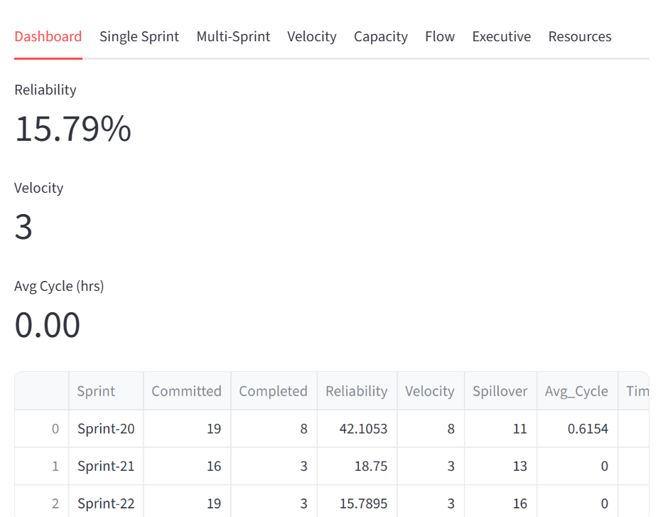

Execution Discipline
Structured sprint cadence, commitment guardrails, and variance tracking so delivery stays predictable and transparent to stakeholders.
Enterprise Agile Delivery Leader
Chennai, India
Structuring execution systems and strengthening cross-team alignment in complex FinTech and regulated enterprise environments.
I enable predictable, governance-aligned delivery in complex FinTech and regulated enterprise environments by structuring execution systems and strengthening cross-team alignment.
With over twelve years of experience, I operate as a systems thinker—focused on how delivery is designed, measured, and improved—rather than as a ceremony facilitator. My work spans banking, insurance, distributed R&D, microservices platforms, cloud modernization, and compliance-driven delivery.
A consulting-style framework for how delivery is run at scale.
Structured sprint cadence, commitment guardrails, and variance tracking so delivery stays predictable and transparent to stakeholders.
Alignment of dependencies, interfaces, and handoffs across multiple teams and streams so releases move as one coherent system.
Explicit risk identification, impact classification, mitigation planning, and escalation paths aligned with CAB and compliance expectations.
Reliability, capacity, and release-confidence indicators that support data-driven decisions and executive transparency.
Clear reporting structures and dashboards that give leadership visibility into delivery health without ceremony overload.
Structured techniques and templates applied in enterprise delivery to ensure consistency, visibility, and governance alignment.
Concrete practices I use day-to-day to run predictable delivery, facilitate effectively, and report with clarity.
Structured frameworks rolled out in product teams and programs to improve flow, predictability, and efficiency—with measurable impact on team performance.
Introduced a standard discipline: backlog readiness before planning, capacity-based commitment caps, and sprint reliability tracked sprint-over-sprint. Teams moved from overcommitment and spillover to sustainable, predictable delivery.
Efficiency impact: Fewer last-minute scope cuts, less rework from half-done work, and higher stakeholder trust in commitments.
Introduced a lightweight dependency council and pre-sprint dependency mapping with owners and escalation windows. Replaced ad-hoc coordination with a repeatable cadence and a single view of critical path.
Efficiency impact: Fewer blocked sprints, faster unblocking when issues arose, and reduced delay cascades across teams.
Standardized a release readiness framework: CAB alignment, rollback planning, risk exposure review, and stakeholder approval gates. Applied consistently so every release followed the same governance without last-minute firefighting.
Efficiency impact: Fewer release-day surprises, fewer rollbacks, and less time spent in reactive release coordination.
Brought reliability, spillover, and cycle-time data into retrospectives so teams could see trends, identify root causes, and set improvement actions with clear success criteria. Turned retros into data-informed improvement loops.
Efficiency impact: Teams improved sprint-over-sprint on reliability and flow; fewer repeated failures and clearer ownership of process changes.
Introduced a consistent executive reporting structure (sprint reliability trend, capacity utilization, risk heatmap, release confidence) so leadership had one source of truth. Reduced status meetings and ad-hoc asks on teams.
Efficiency impact: Less time spent on status compilation and more time on delivery; faster, data-driven decisions and earlier intervention when needed.
Selected engagements demonstrating delivery leadership in complex, regulated environments.
Context: A critical product launch was blocked by unresolved dependencies across six delivery teams and multiple vendors.
Core challenge: No single view of dependencies, conflicting priorities, and late escalation.
Strategic intervention: Introduced a dependency heatmap and pre-sprint dependency mapping with clear owners and escalation windows.
Leadership approach: Facilitated cross-team alignment sessions, established a lightweight dependency council, and tied dependency resolution to sprint commitments.
Outcome: Launch unblocked; dependency-related delays reduced significantly in subsequent releases.
Business impact: On-time go-live and reusable dependency governance for future programs.
Context: A mandatory regulatory release with a fixed deadline and strict CAB and compliance requirements.
Core challenge: Competing demands, limited change windows, and high scrutiny from compliance and audit.
Strategic intervention: Applied a release readiness framework with CAB alignment, rollback planning, risk exposure review, and stakeholder approval gates.
Leadership approach: Single point of coordination for delivery, CAB, and compliance; clear status reporting and decision points.
Outcome: Release delivered within the mandated window with full audit trail and zero production incidents.
Business impact: Regulatory compliance maintained; template adopted for future regulated releases.
Context: Large-scale migration from legacy infrastructure to cloud-native services while sustaining BAU delivery.
Core challenge: Balancing migration milestones with ongoing feature delivery and minimizing business disruption.
Strategic intervention: Phased migration plan with clear milestones, capacity split between BAU and migration, and risk governance around cutover.
Leadership approach: Orchestrated streams for legacy, migration, and new capability; executive reporting on migration progress and release confidence.
Outcome: Migration completed on schedule; BAU delivery maintained throughout.
Business impact: Reduced infrastructure cost and improved scalability; delivery model proven for future modernization.
Context: Conflicting priorities between business, technology, and compliance were delaying decisions and damaging trust.
Core challenge: No shared view of trade-offs, impact, or decision rights.
Strategic intervention: Introduced structured decision forums with clear agenda, options, and impact; documented approval gates and escalation paths.
Leadership approach: Neutral facilitation, evidence-based options, and transparent communication of constraints and timelines.
Outcome: Decisions reached in a timely manner; stakeholder alignment improved.
Business impact: Faster time-to-decision and higher confidence in delivery commitments.
Context: Organization moving from pilot teams to scaled agile delivery across multiple value streams.
Core challenge: Inconsistent practices, weak cross-stream coordination, and lack of shared metrics.
Strategic intervention: Defined operating model and common frameworks (sprint reliability, capacity planning, reporting) with phased rollout and coaching.
Leadership approach: Led design of the scaled model; trained and supported stream leads; established governance and metrics from day one.
Outcome: Coherent agile delivery at scale with visible reliability and capacity metrics.
Business impact: Predictable delivery across streams; foundation for further scaling.
Context: Delivery was running but leadership had little visibility into reliability, capacity, or release risk.
Core challenge: Data scattered across tools; no single source of truth or executive-ready view.
Strategic intervention: Designed and implemented an executive reporting structure with sprint reliability trend, capacity utilization, risk heatmap, and release confidence indicator.
Leadership approach: Worked with teams to define and collect metrics; aligned reporting with existing tools (Jira, Azure DevOps); socialized dashboards with leadership.
Outcome: Consistent, trusted metrics available for steering and governance.
Business impact: Data-driven portfolio decisions; earlier identification of delivery and risk issues.
Context: A key team had missed commitment repeatedly; morale and stakeholder confidence were low.
Core challenge: Root causes unclear; no structured approach to recovery.
Strategic intervention: Applied sprint reliability governance: backlog readiness checks, realistic capacity planning, and variance trend reviews to identify causes and correct course.
Leadership approach: Blameless retrospective; joint agreement on commitment guardrails and support needed; short-term focus on sustainable pace over heroics.
Outcome: Team returned to reliable delivery within two sprints; trend sustained.
Business impact: Restored trust; model used to prevent similar failures elsewhere.
Built to address a recurring governance gap: the lack of a single, reliable view of sprint reliability, capacity utilization, and execution variance for leadership.
ADIP consolidates delivery data and surfaces it through executive-ready dashboards, enabling faster decisions and alignment with governance expectations without adding ceremony.
Core capabilities:

Live demonstration available upon request.
AI-powered Delivery Management Operating System designed to help delivery leaders monitor enterprise service delivery through a unified control tower.
The platform integrates SLA monitoring, incident intelligence, risk governance, capacity planning, financial oversight, and executive reporting into a single decision-support system.
Core Capabilities

Live demonstration available upon request.
Delivery leadership in practice with industry-standard tools and governance patterns.
Formal credentials supporting delivery leadership and agile practice.
Relevant certifications and continuous learning in agile, Scrum, and delivery management. Specific credentials available upon request.
Open to strategic delivery leadership roles and consulting engagements in FinTech and regulated enterprise environments.